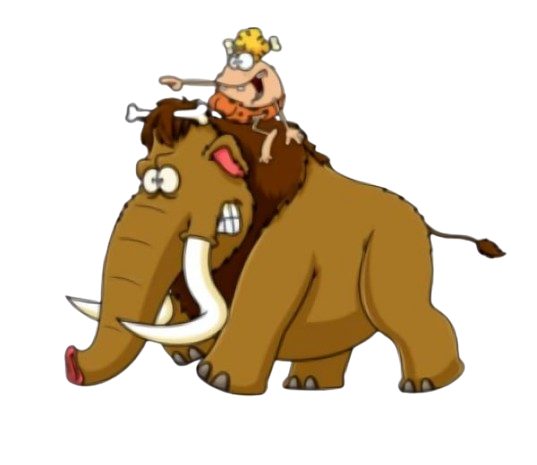
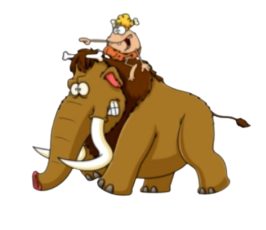

.png) 

Fun Fact 🧐
Manusia purba diketahui sudah berevolusi sejak 2 juta tahun yang lalu loh! Selain itu, homo sapiens adalah manusia purba yang paling dominan dalam hal kecerdasan dan kekuatan fisik, yang membuat mereka dapat berevolusi dengan baik hingga menjadi manusia modern! 🔨

Manusia purba merupakan julukan bagi spesies manusia yang hidup pada masa prasejarah, jauh sebelum zaman sejarah dan catatan tertulis. Karakteristik manusia purba adalah untuk berburu dan meramu. Pada zaman dahulu, mereka berburu hewan untuk bertahan hidup menggunakan benda-benda yang mereka buat sebagai senjata.
Namun, seiring berkembangnya zaman, ada perubahan pada cara manusia bertahan hidup. Karena perubahan kapasitas volume otak yang membuat kita semakin pintar, manusia tidak lagi menggunakan cara purba itu. Seiring perkembangan, manusia purba mulai mengenal pertanian dan beternak. Ini menandai transisi dari manusia nomaden menjadi manusia menetap. Mereka mulai membangun tempat tinggal, mengenal api, dan membentuk kelompok sosial. Ini adalah cikal bakal kehidupan masyarakat modern.